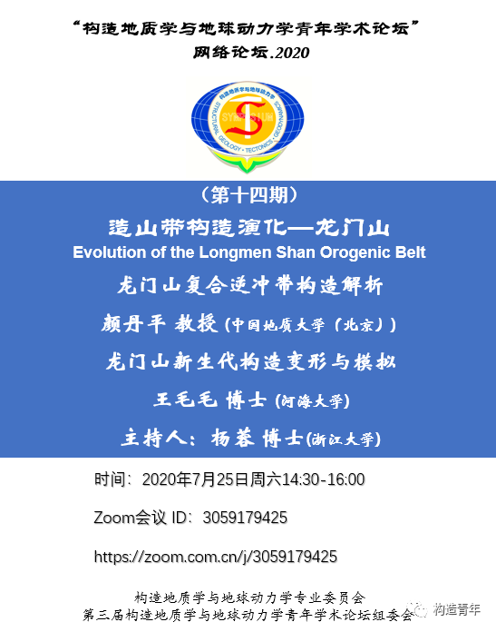

课程回放
- geovbox@哔哩哔哩 https://www.bilibili.com/video/BV1si4y137DX/
时 间：2020年7月25日周六14:30-16:00
Zoom会议ID：3059179425
网址：https://zoom.com.cn/j/3059179425
构造网络论坛第十四期：造山带构造演化—龙门山
报告1: 龙门山符合逆冲带构造解析 中国地质大学（北京）颜丹平教授
报告2：龙门山新生代构造变形与模拟
- 报告人：王毛毛 河海大学 海洋学院
- 内容简要：
- 青藏高原东缘：下地壳流VS上地壳缩短争论；
- 龙门山褶皱冲断带新生代构造变形；
- 新生代构造变形模拟的研究进展。
- 报告中的数值模拟采用VBOX完成；
- 模拟结果很好的解释了龙门山新生代前陆冲断带构造应变的差异性分布；
- 实验设计及边界条件控制值得学习。
- 报告人：王毛毛 河海大学 海洋学院
构造物理模拟及数值模拟可以通过准确的边界条件和参数设置，定量的分析褶皱冲断带构造变形特征，是定量研究褶皱冲断带构造变形过程与变形机制的重要方法。与构造物理模拟相比，数值模拟可以得到更多的系统内部的信息（如应力、应变等） ，并且可重复性高，边界条件设置更容易(李长圣,2019)。二十世纪七十年代，Cundall and Strack(1979)提出了基于非连续介质力学的离散元法（Discrete Element Method，简称DEM） ，用于研究岩土体的各种力学行为。该方法将颗粒集合体模型视为若干离散单元的集合，允许颗粒间产生大位移，特别适合用于构造变形研究，是未来的构造变形研究的主要方向之一(Morgan,2015)。
王毛毛副教授将在构造网络论坛中，介绍他的最新研究成果＂龙门山新生代构造变形与模拟＂。其中，数值模拟部分采用离散元数值模拟软件VBOX完成。

海报
致谢
其中，应力应变分析代码修改自 RICE 大学Julia K. Morgan教授提供的计算脚本，在此感谢。
参考文献
李长圣 (2019) 基于离散元的褶皱冲断带构造变形定量分析与模拟. 博士论文. 南京大学. 推荐下载 最新修订版 提取码dgycCundall P A, Strack O D. 1979. A discrete numerical model for granular assemblies. Geotechnique, 29: 47-65.
Morgan JK (2015) Effects of cohesion on the structural and mechanical evolution of fold and thrust belts and contractional wedges: Discrete element simulations. Journal of Geophysical Research: Solid Earth 120:3870-3896.